뛰거나 걸으면 경로와 거리를 기록하고, 뛰기와 걷기를 자동으로 나눠 보여 주는 안드로이드 러닝 앱입니다.
안드로이드 앱 받기설치 파일과 진짜 파일인지 확인하는 값(SHA-256)이 함께 있습니다.
기록 파일로 웹에서 보기
PC나 아이폰에서는 앱을 설치할 수 없어서, 기록 파일(GPX)을 열어 같은 화면을 봅니다. 런메이트 앱에서 내보낸 파일은 앱이 나눈 걷기·뛰기를 그대로 쓰고, 다른 러닝 앱의 GPX는 앱과 같은 규칙으로 다시 나눕니다.
파일을 이 칸에 끌어다 놓아도 됩니다. 파일은 이 브라우저 안에서만 읽고 어디로도 보내지 않습니다.
0:00시간
0.00km
평균 페이스--'--"
뛴 거리0.00
걸은 거리0.00
경로
뛰기 걷기 멈춤
시간 흐름
1km 구간 (가장 빠른 구간은 주홍)
앱에서는 이렇게 씁니다
시작과 첫 화면
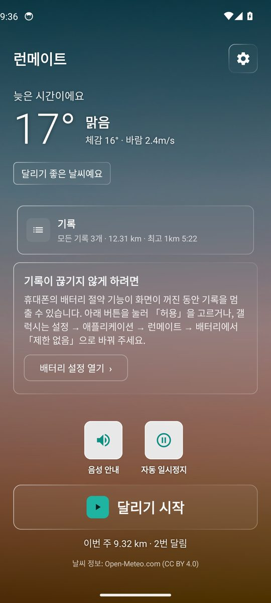
첫 화면 — 날씨·기록 요약·달리기 시작
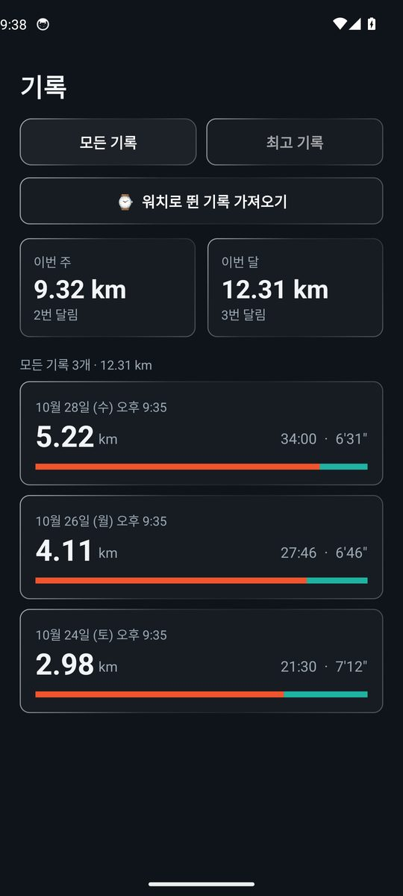
기록 — 모든 기록 / 최고 기록 탭
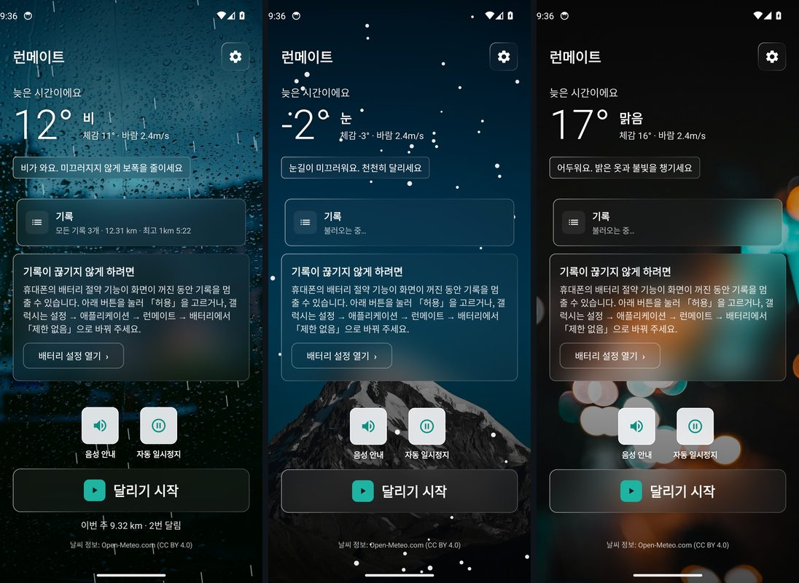
날씨에 따라 바뀌는 배경 — 비·눈·밤
달리는 중
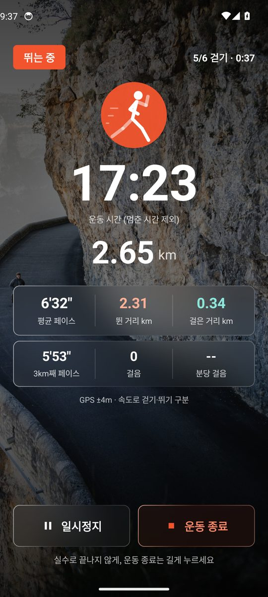
뛰는 중 — 시간·거리·페이스
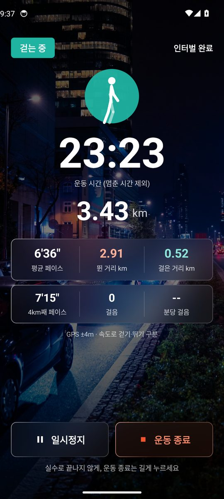
걷는 중 — 걷기·뛰기 자동 구분
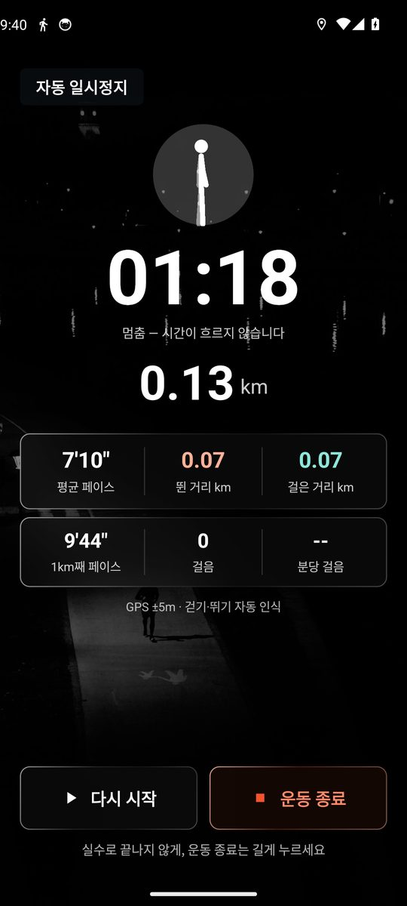
자동 일시정지 — 멈추면 시간도 멈춤
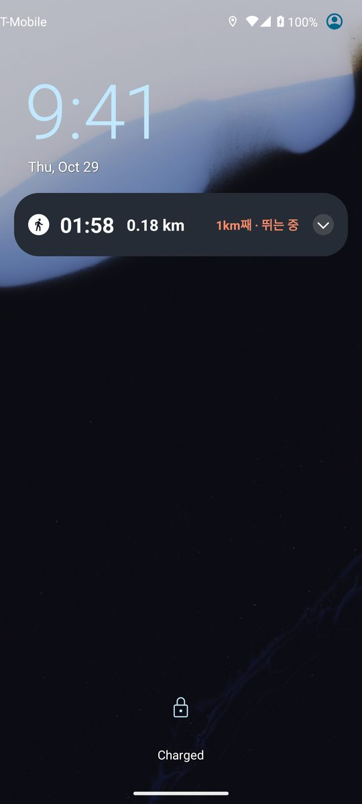
잠금 화면 — 알림 카드로 확인
끝난 뒤
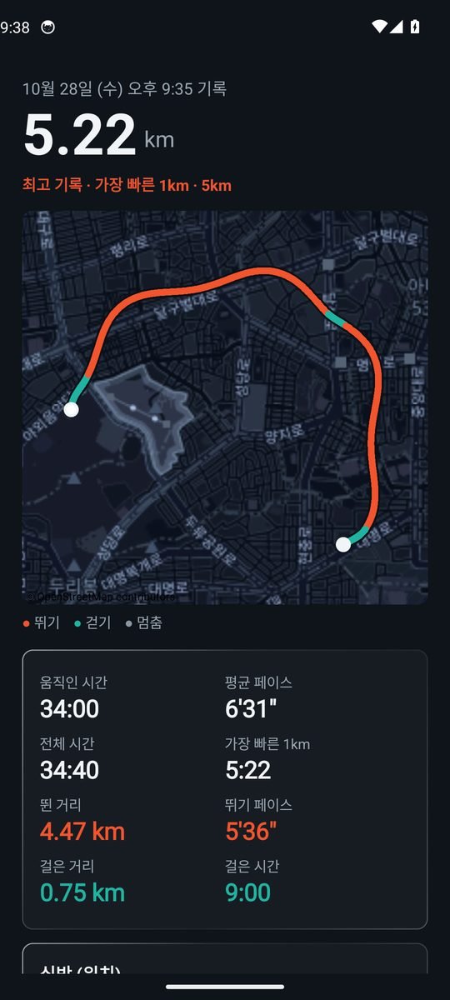
기록 상세 — 지도와 기록 숫자
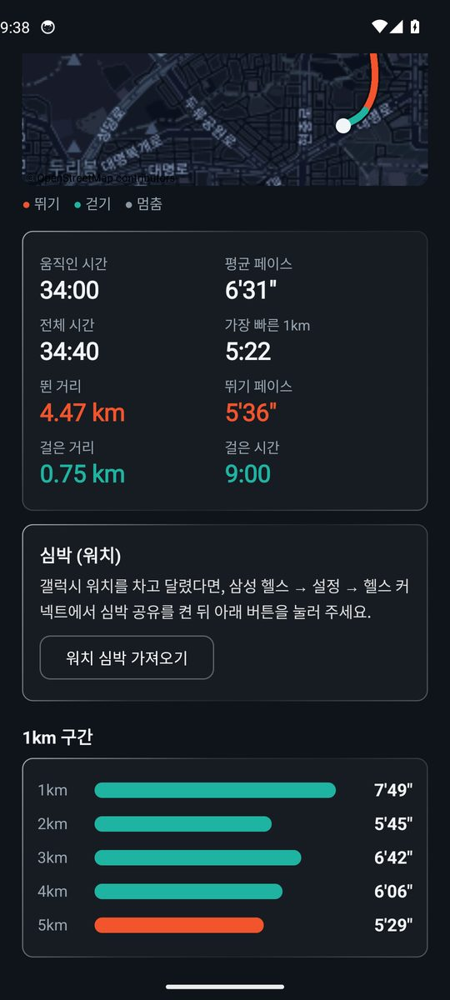
심박(워치) 카드와 1km 구간
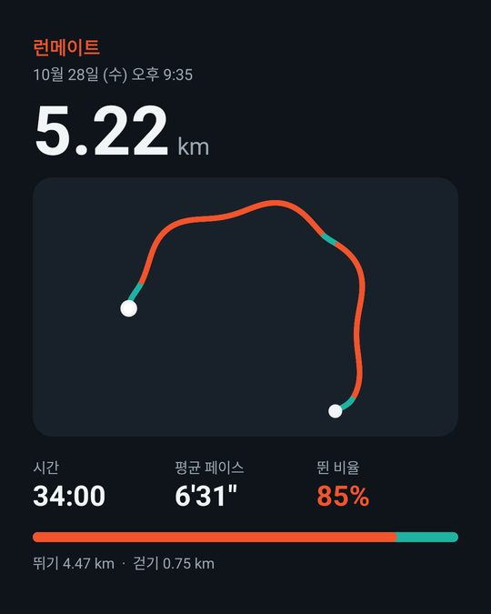
공유 이미지 — 지도 없이 길 모양만
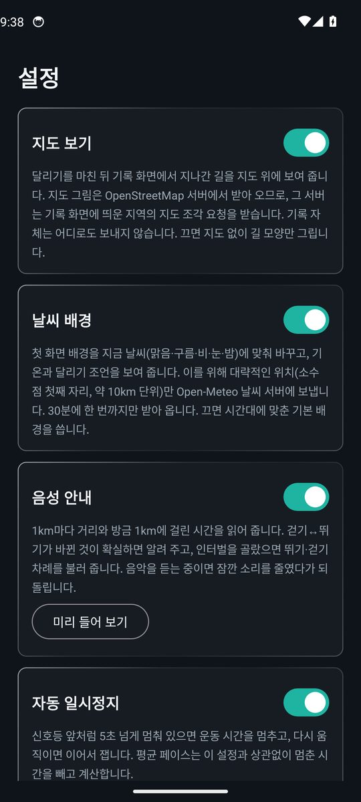
설정 — 기능마다 켜고 끄기
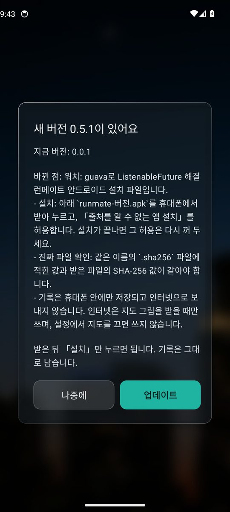
자동 업데이트 — 새 버전 안내
화면은 에뮬레이터에서 예시 기록으로 찍은 것입니다(v0.5.0 기준).
달리기 시작을 누르면 준비 화면에서 자유 달리기나 「1분 뛰기 / 2분 걷기 × 6」 같은 인터벌 코칭을 고르고, 3·2·1 뒤에 기록이 시작됩니다. 음성 안내와 자동 일시정지는 첫 화면의 두 칸으로 켜고 끕니다.
휴대폰을 주머니에 넣으면 됩니다. 화면이 꺼지거나 잠겨도 기록이 이어지고, 휴대폰이 앱을 강제로 꺼도 앱을 다시 열면 그 자리부터 이어서 기록합니다.
걷다가 뛰면 휴대폰 동작 인식과 걸음 센서(분당 140걸음 이상), GPS 속도로 걷기·뛰기가 자동으로 바뀝니다. 걸음 수와 케이던스도 함께 기록합니다.
알림 카드에서 흐르는 운동 시간, 거리, 몇 km째를 보고, 「일시정지/계속」·「종료」 버튼으로 앱을 열지 않고 조작합니다. 1km마다 음성으로 거리와 시간을 알려 주고, 신호등 앞에서 멈추면 자동 일시정지합니다.
끝나면 정지를 길게 누르거나 알림의 「종료」를 누릅니다. 기록 상세에서 지도, 1km 구간, 걸음 수를 보고, 기록 화면의 「모든 기록 / 최고 기록」 탭에서 이번 주·이번 달 거리와 최고 기록을 봅니다. 이미지로 공유하거나 GPX로 내보낼 수도 있습니다.
워치·심박: 헬스 커넥트에 워치 심박이 있으면 기록 상세의 「심박(워치)」 카드에 평균·최고·그래프·1km 구간 심박을 붙이고, 워치로만 뛴 기록도 「워치로 뛴 기록 가져오기」로 옮겨 옵니다. 웨어 OS 3 이상 워치용 앱(첫 버전)에서는 시간·거리·실시간 심박을 보고 워치 버튼으로 시작·일시정지·종료합니다.
새 버전이 나오면 앱이 알려 주고, 받은 파일이 진짜인지(SHA-256) 확인한 뒤 설치 화면을 엽니다.
기록은 휴대폰 안에만 저장되고 인터넷으로 보내지 않습니다. 인터넷은 지도 그림(OpenStreetMap), 날씨(약 10km 단위로 줄인 위치만 Open-Meteo에 보냄), 업데이트 확인(GitHub)에만 쓰며, 설정에서 각각 끌 수 있습니다. 헬스 커넥트 심박도 휴대폰 안에서만 읽습니다.